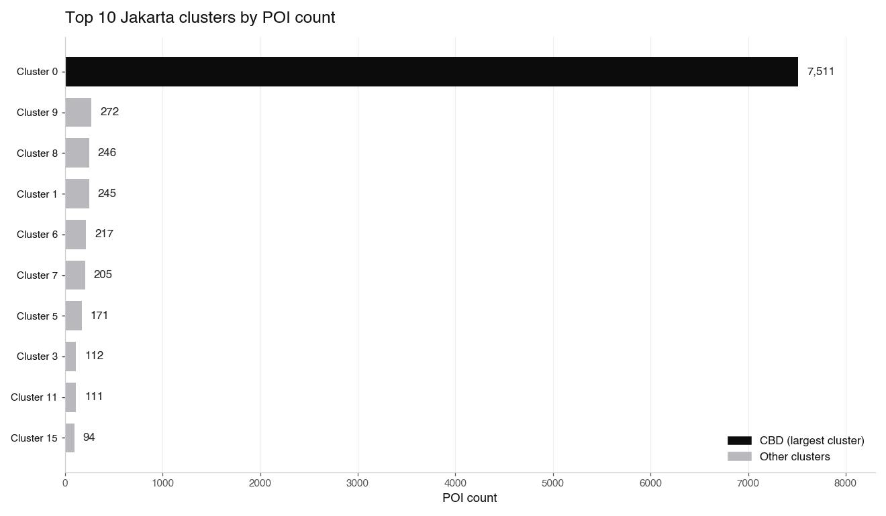
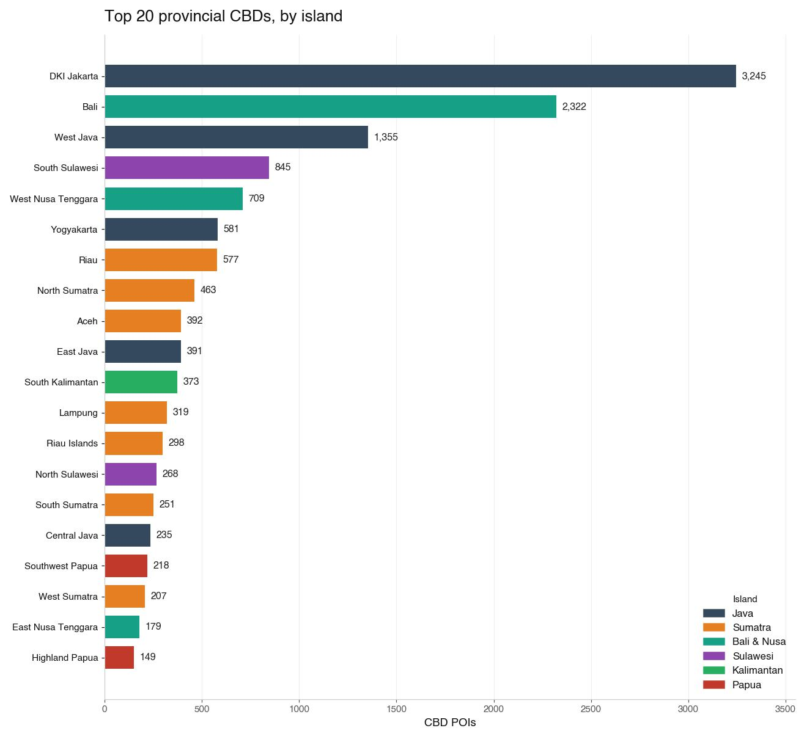

Objective
Identify the main business hub (CBD) of every Indonesian province from open data, and benchmark them by size, density, and spatial structure. A density-based clustering approach lets the data show where commercial activity actually concentrates, without predefining city boundaries.
- Mine commercial POIs nationwide from OpenStreetMap and assign them to provinces.
- Cluster each province’s POIs with adaptive DBSCAN; take the largest cluster as its CBD.
- Compare CBDs across 38 provinces by POI count, radius, and density.
- Map the results interactively at both national and city scale, with a deep-dive on Jakarta.
Methodology
OSM country extract
The full Indonesia extract from Geofabrik: one 1.72 GB .osm.pbf file covering the whole archipelago.
POI extraction
A streaming pyosmium pass keeps commercial tags (office, shop, amenity, commercial building): 91,940 points.
Province assignment
A spatial join places each point in one of 38 provinces; 91,340 land inside a boundary.
Adaptive DBSCAN
Density-based clustering with haversine distances; eps and min_samples scale with each province’s POI count. The largest cluster is the CBD.
Compare 38 CBDs
Each CBD is measured on POI count, radius, and density, alongside a separate 15,417-POI Jakarta deep-dive (19 clusters).
National benchmark
37 of 38 provinces yield a CBD; Jakarta is the widest, Aceh the densest, Bali the surprise #2, all explorable on two interactive maps.
Mining the POIs. The Indonesia extract from Geofabrik (1.72 GB .osm.pbf) is parsed in a single streaming pass with pyosmium, which reads the binary file node by node without ever loading it into memory. Nodes tagged office, shop, selected amenity values (bank, restaurant, cafe, pharmacy, and similar commercial uses), and commercial building values are kept: 91,940 points. A spatial join then assigns each point to one of 38 provinces; 91,340 land inside a boundary, with the remainder sitting on coastlines or border slivers.
Why DBSCAN. A central business district is an emergent density pattern, not an administrative polygon, so the method must discover clusters without knowing their number or shape in advance. DBSCAN does exactly that: a point is a core point if at least min_samples neighbours lie within eps of it; chains of core points merge into clusters, and everything else is labeled noise rather than being forced into a cluster. K-means, by contrast, would demand the number of clusters up front, force every point into one, and assume roughly circular shapes. Distances use the haversine metric, computed on the sphere, so eps is a true ground distance instead of a degree-based approximation that stretches with latitude.
Adaptive parameters. POI density varies by two orders of magnitude across provinces. A single fixed eps would shred Jakarta into fragments or fuse an entire sparse province into one blob, so the parameters scale with province size:
| Province POI count | eps | min_samples |
|---|---|---|
| ≥ 10,000 | 400 m | 50 |
| ≥ 3,000 | 450 m | 35 |
| ≥ 1,000 | 500 m | 20 |
| < 1,000 | 600 m | 10 |
Defining the CBD. Within each province, clusters are ranked by POI count and the largest becomes that province’s CBD (cbd_rank = 1); the top three are retained for inspection so a near-tie is visible rather than hidden. The share of points labeled noise is reported alongside, because it is informative in itself: a high noise share (Central Java reaches 95%) means commercial activity is dispersed across many towns with no single dominant center.
Jakarta deep-dive and benchmarking. A separate, larger Jakarta run (15,417 POIs, including building footprints) resolves the city’s internal structure into 19 clusters rather than treating the capital as one dot. Every provincial CBD is then described by three comparable indicators: POI count for size, the radius of the cluster extent, and density in POIs per km² of cluster area. Results are rendered as interactive Folium maps and exported as JSON for reuse.
Known limitation. OpenStreetMap is crowdsourced, and mapping completeness varies: Java and Bali are covered far more densely than Papua or Maluku, so values for eastern provinces are best read as lower bounds rather than ground truth.
Data Used
| Component | Detail | Source |
|---|---|---|
| Commercial POIs | 91,940 nationwide (office, shop, amenity, commercial building) | OpenStreetMap via Geofabrik (PBF, 1.72 GB) |
| Province boundaries | 38 administrative provinces (91,340 POIs matched) | Administrative boundaries |
| Jakarta deep-dive | 15,417 POIs → 19 clusters | OpenStreetMap (separate run) |
| Parsing & clustering | pyosmium · scikit-learn DBSCAN (haversine) | open-source |
Analysis
A Jakarta deep-dive (15,417 POIs → 19 clusters; the largest, 7,511 POIs, centered on Sudirman–Thamrin–Kuningan) sits alongside the national run across all 38 provinces. Results are explorable in two interactive maps and compared province by province.


Results
- Jakarta has the widest CBD, not the densest. Its CBD (3,245 POIs, Sudirman–Thamrin–Kuningan) spans a 3.4 km radius but only 91 POI/km², growth spreads horizontally along arterial roads.
- Bali is the surprise #2. The Denpasar–Kuta–Seminyak belt (2,322 POIs) beats every Java province except Jakarta, and is denser than Jakarta (140 POI/km²), tourism accelerates commercial urbanization.
- Java is polarized. West Java is dispersed (61.6% noise across Bandung–Bogor–Bekasi–Depok); Central Java is extreme (95% noise, no single CBD); Yogyakarta is hyper-concentrated at Malioboro (198 POI/km²).
- Aceh is the densest CBD nationwide, 1,310 POI/km² inside a 309 m radius, a compact urban core consistent with post-tsunami rebuilding.
- Eastern Indonesia hubs: Makassar (237 POI/km²) and Sorong lead their regions; East Kalimantan (the new capital, IKN) shows just 101 POIs and 68.7% noise, an early commercial footprint.
- Structured inequality: three provinces (Jakarta, Bali, West Java) hold 37% of all national CBD POIs; Maluku Utara is the only province with no CBD cluster at all.
| # | Province (core) | Island | CBD POIs | Density (POI/km²) |
|---|---|---|---|---|
| 1 | DKI Jakarta | Java | 3,245 | 91.0 |
| 2 | Bali (Denpasar) | Bali & Nusa | 2,322 | 139.7 |
| 3 | West Java (Bandung) | Java | 1,355 | 142.7 |
| 4 | South Sulawesi (Makassar) | Sulawesi | 845 | 237.2 |
| 5 | West Nusa Tenggara (Mataram) | Bali & Nusa | 709 | 84.4 |
| 6 | Yogyakarta (Malioboro) | Java | 581 | 198.1 |
| 7 | Riau (Pekanbaru) | Sumatra | 577 | 57.4 |
| 8 | North Sumatra (Medan) | Sumatra | 463 | 103.4 |
| 9 | Aceh (Banda Aceh) | Sumatra | 392 | 1,309.8 |
| 10 | East Java | Java | 391 | 100.2 |
Note: OpenStreetMap is crowdsourced, so coverage varies by region, areas with active OSM communities (Java, Bali) are richer than Papua and Maluku, and eastern Indonesia may be underrepresented.
Conclusion: density-based clustering on open POI data is enough to surface a consistent, comparable picture of where commercial activity concentrates across Indonesia. The result isn’t a simple Jakarta-centric hierarchy: it shows genuine surprises (Bali, Aceh, Yogyakarta), a clear tourism signal, and structural dispersion in Central and West Java where no single dominant CBD forms.
References & Data
Ester, M., Kriegel, H.-P., Sander, J., & Xu, X. (1996). A density-based algorithm for discovering clusters in large spatial databases with noise. Proceedings of KDD-96, 226–231.
OpenStreetMap contributors, via Geofabrik, Indonesia .osm.pbf extract.
scikit-learn, DBSCAN (haversine metric); pyosmium, PBF parsing.
indonesia_cbd.json, CBD per province · indonesia_all_clusters.json, top-3 clusters per province · island_summary.json, per-island summary.